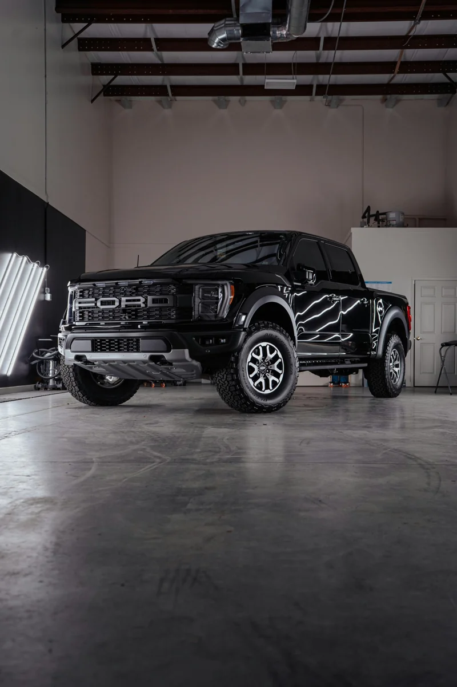
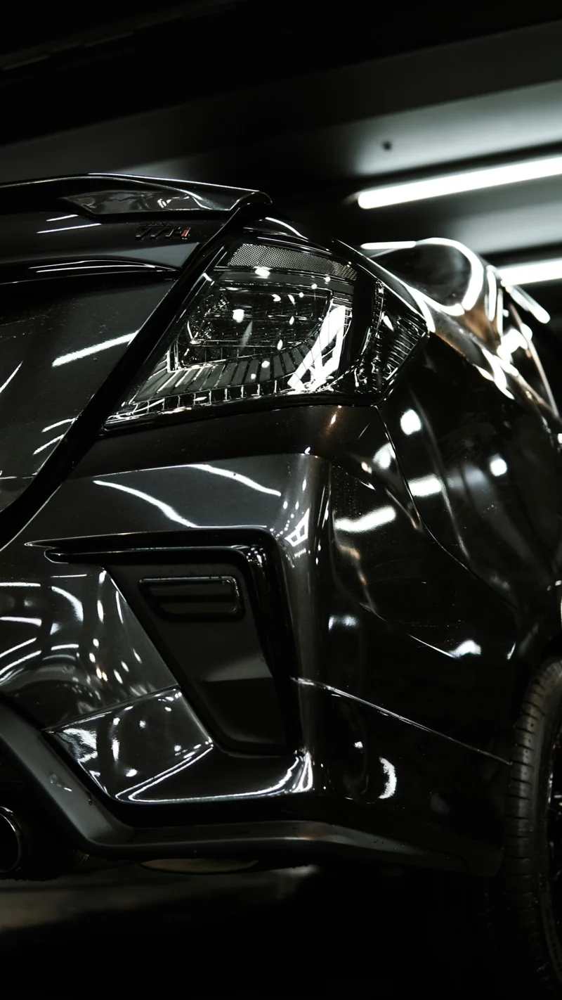

Tint Lab Jersey Village
14518 Hempstead Rd, Suite 5CHouston, TX 77040
Open daily, 9 am – 6 pm
(832) 212-0354 Claim $199 at Jersey Village(Side Windows + Rear Windshield)
More comfort in the Houston sun. Nano ceramic window tint helps reduce solar heat and glare, adds UV protection and gives your vehicle a clean, consistent finish. Pick the Tint Lab closest to you.
Starting price. Confirm your vehicle, film, shade and final package with your location before booking.
Choose the location that suits your drive. Each team can confirm your vehicle price, film, shade and appointment availability.
Open daily, 9 am – 6 pm
(832) 212-0354 Claim $199 at Jersey VillageOpen daily, 9 am – 6 pm
(713) 829-5969 Claim $199 at MemorialOpen daily, 9 am – 6 pm
(713) 829-5969 Claim $199 at GalleriaNano ceramic tint brings more than darker glass. Its ceramic-particle technology helps manage solar heat and UV exposure while giving your side windows and rear windshield a coordinated finish.
Nano ceramic film helps reduce solar heat through your glass for a more comfortable cabin on sunny Houston drives.
Help soften harsh sunlight with nano ceramic tint in a shade chosen for your vehicle and visibility needs.
UV protection helps limit sun exposure that contributes to fading in seats, dashboards and interior trim.
Get a clean side-and-rear finish with nano ceramic tint. Discuss the right balance of privacy, visibility and style with the team.
Performance depends on the film, shade and existing glass. Confirm the specifications of your selected package. Front windshield coverage is outside this offer.

A good finish starts before the film touches the glass. It starts with understanding your vehicle, the look you want and how you use it.
Tint Lab brings window tinting and vehicle protection together. For your tint, start with a clear quote, compare your options and let the team take care of the finish.
Find my locationA closer look at the vehicles featured by Tint Lab. Find inspiration for your own upgrade.




Real reviews from each Tint Lab location’s Google listing.
Find your location ↓“Tint Lab did an amazing job! Great tint service, excellent quality, and professional customer service.”View on Google ↗
“The team was very professional, they knew their product so well… Super fast turnaround and the quality is flawless.”View on Google ↗
“I had nano ceramic tint installed, and I couldn’t be happier with the results. It looks amazing, keeps the interior noticeably cooler.”View on Google ↗
“The tint was applied smoothly with no bubbles, creases, or imperfections… a clean, flawless finish.”View on Google ↗
“The car looks much better and I’m happy he talked me into the 70% ceramic clear tint. It was definitely the way to go.”View on Google ↗
“The experience here is awesome fast and super clean. … they listened to what I wanted and showed some samples and got it done.”View on Google ↗
“The staff was friendly, the price was fair, and it was done quickly. Will definitely be coming back.”View on Google ↗
Full vehicle nano ceramic tint starting at $199 includes the side windows and rear windshield. The front windshield is outside this offer. Confirm your exact vehicle price, included glass and film with your location before booking.
Choose the location that’s most convenient for you: Jersey Village (14518 Hempstead Rd, Suite 5C), Memorial (8700 Long Point Rd, Unit 403) or Galleria (2611 Briarhurst Dr). Each location page has its own quote form and call button.
Nano ceramic tint uses a layer of tiny ceramic particles to help reduce solar heat and UV exposure through your windows. It combines everyday driving comfort with the shade and finish you choose. Ask Tint Lab for the exact film series and performance specifications included in your quote.
The time depends on your vehicle, the selected coverage and whether old film needs removing. Confirm the appointment length and pickup arrangements when you book.
Tell the team about existing film when requesting a quote. They’ll confirm whether removal is needed, what it involves and whether there’s an additional charge.
Jersey Village · Memorial · Galleria